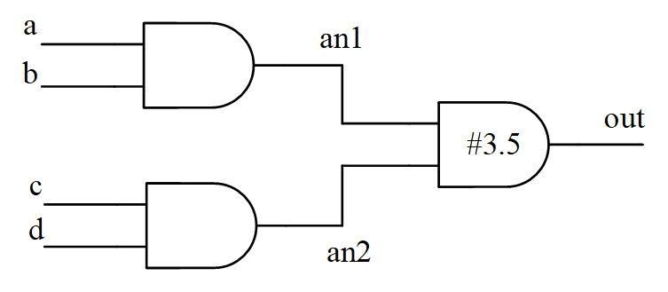

Keywords: distributed delay, lumped delay, path delay
Most previous simulations were to verify the correctness of digital circuit functions, where signal transmission was ideal and had no delay. However, actual logic components and the transmission paths between them all have delays. Therefore, it is necessary to check whether the delay in the design meets the timing constraints of the actual circuit. Timing simulation can be used to check timing, that is, during simulation, delay information matching the actual conditions is added to components or paths, and related calculations are performed to determine whether the timing is satisfied.
Static Timing Analysis (STA) is also a timing verification technique. It does not care about whether the logic function is correct; it only calculates and analyzes the timing in the design to determine whether there are designs that violate timing constraints. STA is fast and can quickly locate problems, but it ignores some asynchronous issues.
Therefore, "STA + timing simulation" is a relatively complete and safe timing verification method. This tutorial only gives a brief introduction to timing simulation, and does not discuss STA for now.
There are mainly 3 types of delay models:Distributed delay, lumped delay, and path delay.
Distributed Delay
Distributed delay requires defining delays for each independent component in the circuit; different paths have different delays, as shown in the figure below.

The Verilog model of distributed delay is basically the same as the method of instantiating logic gate units and specifying delay values.
Example
output out,
input a, b, c, d);
wire an1, an2 ;
and #1 (an1, a, b);
and #2 (an2, c, d);
and #1.5 (out, an1, an2);
endmodule
Continuous assignment statements (assign) can also be used to specify distributed delay.
Example
output out,
input a, b, c, d);
wire an1, an2 ;
assign #1 an1 = a & b ;
assign #2 an2 = c & d ;
assign #1.5 out = an1 & an2 ;
endmodule
Lumped Delay
Lumped delay concentrates the accumulated delays of all paths into the last gate unit.
The delay to the last gate unit varies with different paths; in this case, the maximum delay is taken as the delay of the last gate unit.
Converting the above distributed delay diagram into a lumped delay diagram is as follows.

The Verilog model of lumped delay is as follows.
Example
output out,
input a, b, c, d);
wire an1, an2 ;
and (an1, a, b);
and (an2, c, d);
and #3.5 (out, an1, an2); //set the max delay at the last gate
endmodule
Path Delay
Path delay specifies delay times for all paths from each input pin to each output pin.
The path delay schematic is as follows.

The path delay model needs to be defined using the keyword specify.
The Verilog model of path delay is as follows; the specific definition method will be introduced in detail in the next section.
Example
output out,
input a, b, c, d);
specify
(a => out) = 2.5 ;
(b => out) = 2.5 ;
(c => out) = 3.5 ;
(d => out) = 3.5 ;
endspecify
wire an1, an2 ;
and (an1, a, b);
and (an2, c, d);
and (out, an1, an2);
endmodule
Comparison of Delay Models
- Distributed delay: Distributed delay disperses the delay time to each gate unit, but still cannot describe the differences in delay on different pins within a basic unit. When the design scale becomes large, the structure becomes complex.
- Lumped delay: This method has a simple model and is suitable for small-scale circuits, but it cannot describe the delays of different paths from input to output.
- Path delay: It specifies pin-to-pin delays, and the delay information is relatively complete. Although there is more information, it is easier to implement for large-scale circuits. Because designers do not need to care about the internal implementation logic of the module, they only need to know the delay from input to output pins. Even if the internal logic of the module changes, the path delay specification can remain unchanged.
Therefore, the delay information in most logic gate unit libraries is given in the form of path delay. Many integrated modules can also directly obtain path delays from their data sheets, which is very convenient.